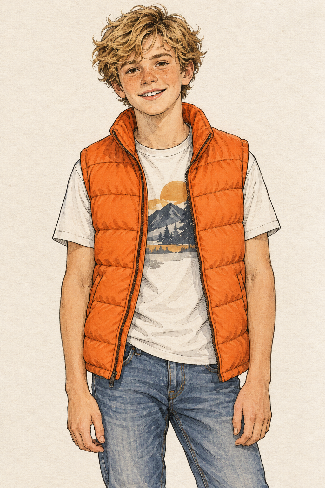
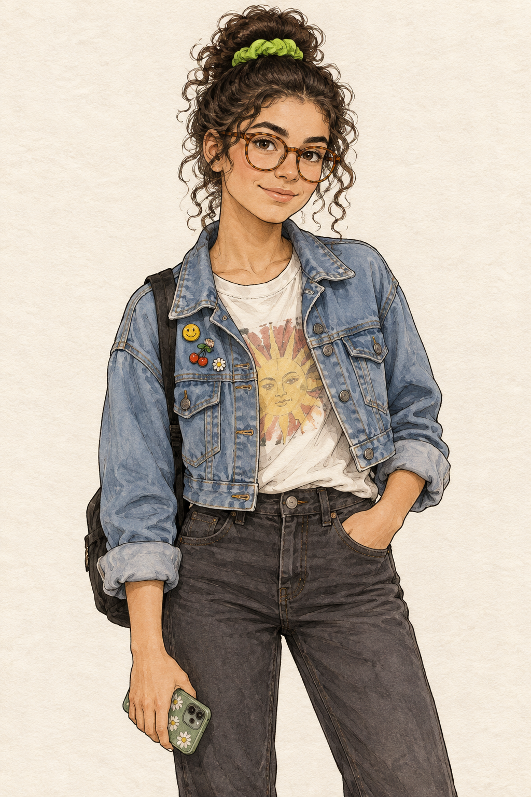
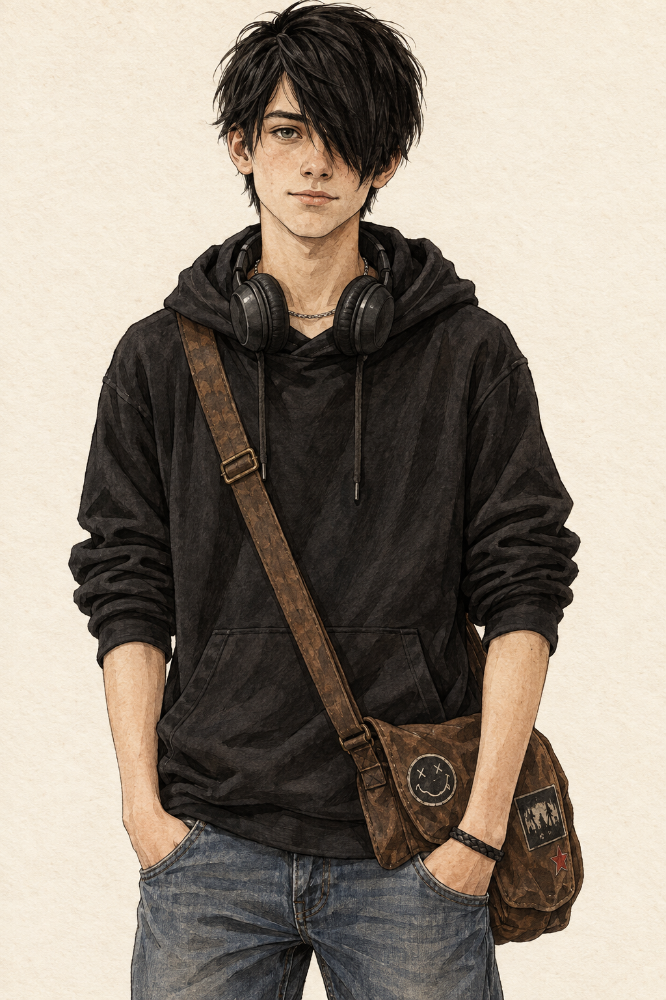
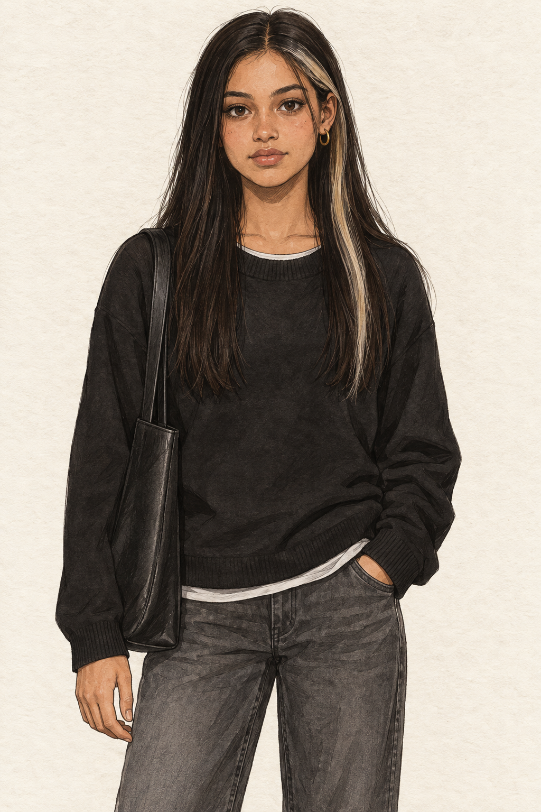
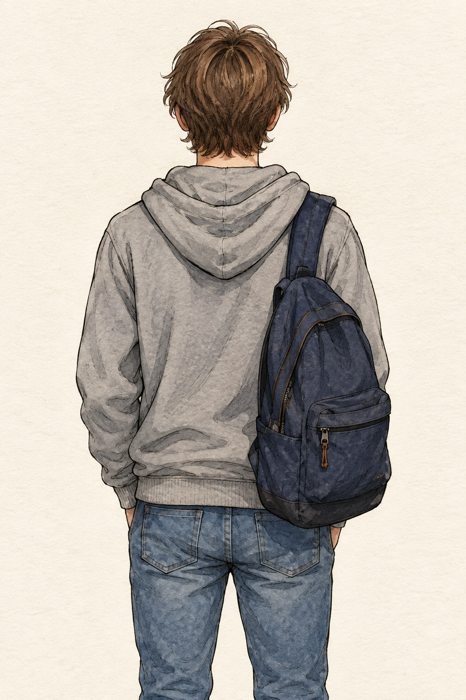

Year 3 · Referenzen für die Bildproduktion · 19.09.2026
FOURTEEN
CODEX DRAFT — NOT CANON · welle-047
Fünf Figuren, ein gemeinsamer Zeichenstil. Dieses Blatt legt die sichtbaren Erkennungsmerkmale zur Beurteilung vor. Erst nach Kokis Urteil beginnt die Bilderwelle für Cover, 14 Episodenkarten und Endkarte.

Ben13 · sandblonde Wellen · Sommersprossen · orange Steppweste

Leah13 · dunkler Lockendutt · runde Brille · Jeansjacke und Jeans

Leo13 · schwarzer Hoodie · Kopfhörer · linkes Auge verdeckt

Sara13 gemäß Karte · monochrom · Silbersträhne an linker Schläfe

DU13 · grauer Hoodie · ausschließlich Rückenansicht · kein Gesicht
Zur Entscheidung offen: Hier gilt die Kartenfassung: Sara 13, DU grau und nur von hinten. Der Plan nennt Sara 15–16; die Bildbibliothek nennt Sara 15 sowie einen dunkelgrünen Hoodie mit erlaubtem Profil. Dieses Blatt ersetzt noch keine Spielbilder. Alterswirkung und Stil bleiben Kokis Urteil.
Renderprobe: noch nicht einbaufertig. Der unveränderte Spielrenderer lädt alle fünf Referenzen, schneidet sie als runde 46 × 46-Pixel-Sprecherbilder aber mittig ab; Köpfe gehen verloren. Diese langen Bilder dienen dem Cast-Urteil. Für den Spieleinbau sind anschließend passend komponierte Sprecherporträts oder ein gesondert freigegebener Ausschnitt-Anschluss nötig. Angemeldeter Spielablauf und Produktion: UNVERIFIZIERT.
Konsistenz-Matrix · 16 Zielbilder
X = verpflichtendes Sollmerkmal, noch ungeprüft. — = Figur laut aktuellem Bildauftrag nicht vorgesehen. Alle 16 Bilddateien fehlen; ihre Generation wartet auf das Cast-Urteil.
Vor der Bilderwelle klären
- Episode 11: Der alte Prompt verlangt ein erschrockenes Gesicht, nennt aber nur DU. Eine Rückenansicht mit zitternder Hand muss den Konflikt lösen.
- Episode 14: „four plus Ben“ nennt fünf Personen, die Besetzungsliste nur vier. GG muss die Besetzung bestätigen.
- Episode 1: Bildkomposition an der fertigen Geschichte prüfen. Die bestehenden Texte bleiben unangetastet.